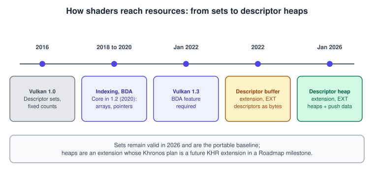
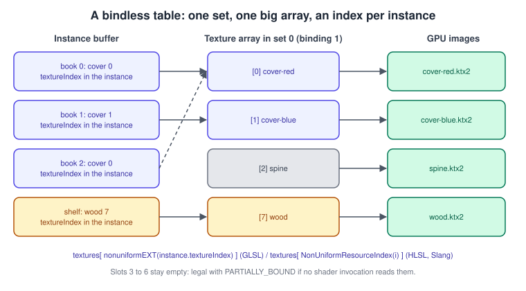
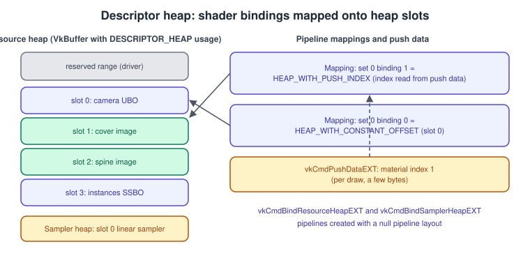

Bindless in Vulkan: Descriptor Indexing, Buffer Device Address, Descriptor Buffer and Descriptor Heap
|
This content was generated with the assistance of AI and should be verified against the official documentation before being relied on in production. |
Classic Vulkan binds a few descriptor sets per draw and changes them when the material changes. A bindless renderer binds one large table once per frame, or even once per run, and lets the shader pick resources by number. The CPU stops rebinding, draws can be merged or driven by the GPU (indirect draws, compute culling, ray tracing), and a shader can touch any texture or buffer that is in the table. The price is that the application manages the table and its lifetime, and that the shader author must obey a few uniformity rules.
The facts on this page were checked in November 2026. Descriptor indexing and buffer device address are core Vulkan 1.2 features
(buffer device address is also in the set of features Vulkan 1.3 requires). VK_EXT_descriptor_buffer is an extension from 2022.
VK_EXT_descriptor_heap is an extension announced by Khronos on 23 January 2026 (Vulkan 1.4.340) and is the newest model; the
Vulkan Working Group announced that it is seeking developer feedback before finalising a KHR extension targeting a future Roadmap
milestone, so details can still change. The headers used are 1.4.3xx and the LunarG SDK is 1.4.363.0. The code is C++20 with Vulkan-Hpp
and Slang shaders (GLSL where the syntax differs). It builds on the layouts and pools of
Descriptors and Push Constants, which you should read first.
In the Vulkan Bookshelf this is the step "instanced books through bindless indexing": one texture table holds the cover, spine and pages textures of every book plus the wood, a storage buffer holds one record per instance, and a single indirect draw renders the whole shelf. Metal’s equivalent is in Argument Buffers and Bindless Resources.
Four models side by side

| Model | Status in November 2026 | Where descriptors live | Choose it when |
|---|---|---|---|
Descriptor sets |
Core since 1.0 |
Pool-allocated set objects |
Always available; fine for tens to a few hundred resources per frame. |
Descriptor indexing (update after bind, runtime arrays, non-uniform indexing) |
Core since 1.2; individual features are optional and reported by the device |
Still descriptor sets, but with huge arrays and relaxed update rules |
You want a global texture or buffer table and still want portable core Vulkan. |
Buffer device address (BDA) |
Core since 1.2; required by 1.3 |
No descriptors at all: a 64-bit pointer in a buffer or push constant |
Buffers only (vertex pulling, per-instance data, acceleration structures, linked data structures). |
Descriptor buffer |
Extension |
Descriptors written as bytes into a buffer you manage |
You need a hardware-close model and the device supports it. |
Descriptor heap |
Extension |
Two heaps (resources, samplers) written by the application; shader bindings are mapped onto heap slots |
Early adopters targeting the future direction; expect changes before a KHR version. |
The Khronos plan stated in January 2026 is for the descriptor heap to replace the descriptor set mechanism in the long run, while
keeping compatibility with legacy descriptor sets. The sets are therefore not deprecated today: vkCmdBindDescriptorSets is still the
baseline on every device, including Android and the Apple translation layers
(Vulkan on Android,
Vulkan on Apple).
Descriptor indexing
What it adds
Descriptor indexing was an extension (VK_EXT_descriptor_indexing, 2018) and became core in Vulkan 1.2 (2020). It relaxes four
rules of the original descriptor model. Each is a separate feature, because hardware supported them unevenly; query them before use:
| Capability | Feature or flag | What it means |
|---|---|---|
Runtime-sized arrays |
|
A binding can be declared with no size in the shader ( |
Dynamic and non-uniform indexing |
|
The index into a descriptor array may be computed at run time. Uniform indexing means all invocations of a draw or workgroup use the same index; anything else is non-uniform and needs the qualifier below. |
Partially bound |
|
Slots may stay unwritten as long as no shader invocation reads them. |
Update after bind |
|
A descriptor may be written after the set is bound in a command buffer, up to submission. With
|
Variable descriptor count |
|
The last binding of a set can have a count chosen at allocation time, not at layout creation. |
To use update after bind, three things must agree: the binding flag in VkDescriptorSetLayoutBindingFlagsCreateInfo, the layout flag
VK_DESCRIPTOR_SET_LAYOUT_CREATE_UPDATE_AFTER_BIND_POOL_BIT, and the pool flag VK_DESCRIPTOR_POOL_CREATE_UPDATE_AFTER_BIND_BIT. Update-after-bind
descriptors have their own, usually larger, limits (maxDescriptorSetUpdateAfterBind*, maxPerStageDescriptorUpdateAfterBind*) in
VkPhysicalDeviceVulkan12Properties; the totals of ordinary and update-after-bind descriptors are counted separately, so query them
rather than assuming the ordinary limits apply.
Enabling the features
vk::PhysicalDeviceVulkan12Features f12{
.descriptorIndexing = VK_TRUE,
.shaderSampledImageArrayNonUniformIndexing = VK_TRUE,
.descriptorBindingSampledImageUpdateAfterBind = VK_TRUE,
.descriptorBindingPartiallyBound = VK_TRUE,
.descriptorBindingVariableDescriptorCount = VK_TRUE,
.runtimeDescriptorArray = VK_TRUE,
.bufferDeviceAddress = VK_TRUE};
// Query first: vk::PhysicalDevice::getFeatures2<...>() and compare, then enable what the device reports.
vk::StructureChain<vk::DeviceCreateInfo, vk::PhysicalDeviceVulkan12Features> chain{
vk::DeviceCreateInfo{ /* queues, extensions as usual */ }, f12};
vk::raii::Device device(physicalDevice, chain.get<vk::DeviceCreateInfo>());The feature chain mechanics (pNext, Features2, VkPhysicalDeviceVulkan12Features) are explained in
Versions, Profiles and Extensions and
Physical and Logical Devices.
A global texture table
The Bookshelf allocates one set whose binding 0 is a texture array with a variable count, written whenever a texture finishes loading.
constexpr uint32_t kMaxTextures = 1024; // must not exceed the update-after-bind limits of the device
vk::DescriptorSetLayoutBinding texBinding{
.binding = 0, .descriptorType = vk::DescriptorType::eSampledImage,
.descriptorCount = kMaxTextures, .stageFlags = vk::ShaderStageFlagBits::eFragment};
vk::DescriptorBindingFlags flags =
vk::DescriptorBindingFlagBits::ePartiallyBound |
vk::DescriptorBindingFlagBits::eUpdateAfterBind |
vk::DescriptorBindingFlagBits::eVariableDescriptorCount; // allowed only on the last binding
vk::DescriptorSetLayoutBindingFlagsCreateInfo bindingFlags{.bindingCount = 1, .pBindingFlags = &flags};
vk::DescriptorSetLayoutCreateInfo layoutInfo{
.pNext = &bindingFlags,
.flags = vk::DescriptorSetLayoutCreateFlagBits::eUpdateAfterBindPool,
.bindingCount = 1, .pBindings = &texBinding};
vk::raii::DescriptorSetLayout texLayout(device, layoutInfo);
vk::DescriptorPoolSize poolSize{vk::DescriptorType::eSampledImage, kMaxTextures};
vk::raii::DescriptorPool texPool(device, vk::DescriptorPoolCreateInfo{
.flags = vk::DescriptorPoolCreateFlagBits::eUpdateAfterBind,
.maxSets = 1, .poolSizeCount = 1, .pPoolSizes = &poolSize});
uint32_t actualCount = kMaxTextures;
vk::DescriptorSetVariableDescriptorCountAllocateInfo variableCount{
.descriptorSetCount = 1, .pDescriptorCounts = &actualCount};
vk::DescriptorSetAllocateInfo alloc{
.pNext = &variableCount, .descriptorPool = *texPool, .descriptorSetCount = 1, .pSetLayouts = &*texLayout};
vk::raii::DescriptorSet texSet = std::move(device.allocateDescriptorSets(alloc).front());
// Later, whenever a texture is loaded (the set may already be bound in a command buffer being recorded)
void registerTexture(vk::raii::Device &device, vk::DescriptorSet set, uint32_t slot, vk::ImageView view)
{
vk::DescriptorImageInfo info{.imageView = view, .imageLayout = vk::ImageLayout::eShaderReadOnlyOptimal};
vk::WriteDescriptorSet write{.dstSet = set, .dstBinding = 0, .dstArrayElement = slot, .descriptorCount = 1,
.descriptorType = vk::DescriptorType::eSampledImage, .pImageInfo = &info};
device.updateDescriptorSets(write, {});
}The slot number returned to the game (the texture’s "bindless handle") is simply its array index. A free list of slots and a deferred release (wait for the frames in flight that may still read the old texture before reusing the slot) complete the design; the frame lifetime rules are in Timeline Semaphores and Frames in Flight.
Selecting a texture in the shader

// bookshelf.slang
struct Instance
{
float4x4 model;
uint coverIndex; // index into the texture table
uint pad0;
uint pad1;
uint pad2;
};
[[vk::binding(0, 0)]] StructuredBuffer<Instance> instances;
[[vk::binding(0, 1)]] Texture2D textures[]; // runtime-sized: needs runtimeDescriptorArray
[[vk::binding(1, 1)]] SamplerState linearRepeat;
struct VSOut
{
float4 clip : SV_Position;
float2 uv : TEXCOORD0;
nointerpolation uint instanceId : TEXCOORD1;
};
[shader("fragment")]
float4 fsMain(VSOut input) : SV_Target
{
uint index = instances[input.instanceId].coverIndex;
// Different instances of one draw pick different slots: the index is not uniform, so mark it
return textures[NonUniformResourceIndex(index)].Sample(linearRepeat, input.uv);
}Source: Vulkan Guide: HLSL in Vulkan
The same selection in GLSL:
#version 460
#extension GL_EXT_nonuniform_qualifier : require
layout(set = 1, binding = 0) uniform texture2D textures[];
layout(set = 1, binding = 1) uniform sampler linearRepeat;
layout(std430, set = 0, binding = 0) readonly buffer Instances { mat4 model[]; uint coverIndex[]; } inst;
layout(location = 0) in vec2 vUv;
layout(location = 1) flat in uint vInstance;
layout(location = 0) out vec4 outColor;
void main()
{
uint i = inst.coverIndex[vInstance];
outColor = texture(sampler2D(textures[nonuniformEXT(i)], linearRepeat), vUv);
}The GLSL extension GL_EXT_nonuniform_qualifier provides nonuniformEXT(), which produces the SPIR-V NonUniform decoration; HLSL and
Slang spell it NonUniformResourceIndex(). Skip it only when the index is the same across the draw (or the workgroup) and the
device says dynamically uniform indexing is allowed. If you forget it when it is needed, the result is undefined on some
hardware and often correct on others, which makes this one of the nastiest bindless bugs; the validation layer cannot always detect it.
Rules that cause bugs
-
Reading a slot that was never written is allowed only with
PARTIALLY_BOUNDand only if no invocation executes that read. A safe default is to fill every slot with a 1x1 "missing" texture at start. -
Two writes to the same slot, or a write to a slot a GPU read may still use, are races. Update-after-bind lifts the "not in use by a pending command buffer" rule only for the flags you set; the application still owns ordering.
-
With
UPDATE_UNUSED_WHILE_PENDINGthe update must not touch a slot that an in-flight execution may read. -
The size of the table is bounded by the update-after-bind limits, not by memory. Check
maxPerStageDescriptorUpdateAfterBindSampledImagesand the set-wide limit; they differ per device. -
Separate sampled image and sampler descriptors keep the table small (one sampler, many images).
-
Shaders compiled for a runtime array need
runtimeDescriptorArray; pipeline creation without it fails validation. -
Each binding holds one descriptor type: textures, storage buffers and storage images each need their own binding.
-
Dynamic non-uniform indexing can be slower than uniform indexing on some GPUs; group draws so most indices are uniform.
Buffer device address
The idea
Buffer device address (BDA) turns a buffer into a 64-bit pointer. You ask the device for the address of a buffer
(vkGetBufferDeviceAddress), store it anywhere a shader can read (push constants, a uniform or storage buffer, another buffer), and the
shader dereferences it as a typed pointer. There are no descriptors for those buffers, and linked data structures become possible.
The feature bufferDeviceAddress is core since Vulkan 1.2. Requirements:
-
the buffer is created with
VK_BUFFER_USAGE_SHADER_DEVICE_ADDRESS_BIT -
the memory is allocated with
VkMemoryAllocateFlagsInfocarryingVK_MEMORY_ALLOCATE_DEVICE_ADDRESS_BIT -
VMA is created with
VMA_ALLOCATOR_CREATE_BUFFER_DEVICE_ADDRESS_BITso that it does both (Memory: Heaps, Types and VMA) -
in the shader, the language exposes pointer types: GLSL uses
GL_EXT_buffer_reference, and Slang has pointer types for its SPIR-V target; both compile to the SPIR-VPhysicalStorageBuffer64storage class
// C++: create an instance buffer and fetch its address (VMA configured with the device-address flag)
vk::BufferCreateInfo bufInfo{.size = instanceBytes,
.usage = vk::BufferUsageFlagBits::eStorageBuffer | vk::BufferUsageFlagBits::eShaderDeviceAddress |
vk::BufferUsageFlagBits::eTransferDst,
.sharingMode = vk::SharingMode::eExclusive};
// ... create with VMA (VMA_MEMORY_USAGE_AUTO, device-local), then:
vk::BufferDeviceAddressInfo addressInfo{.buffer = instanceBuffer};
vk::DeviceAddress instanceAddress = device.getBufferAddress(addressInfo);
struct FramePush { vk::DeviceAddress instances; uint32_t firstInstance; uint32_t pad; };
FramePush push{instanceAddress, 0, 0};
cmd.pushConstants<FramePush>(*pipelineLayout, vk::ShaderStageFlagBits::eVertex, 0, push);#version 460
#extension GL_EXT_buffer_reference : require
#extension GL_EXT_scalar_block_layout : require
struct Instance { mat4 model; uint coverIndex; };
layout(buffer_reference, scalar, buffer_reference_align = 16) readonly buffer InstanceBuffer { Instance data[]; };
layout(push_constant, scalar) uniform Push { InstanceBuffer instances; uint firstInstance; } pc;
layout(location = 0) in vec3 inPosition;
layout(set = 0, binding = 0) uniform Camera { mat4 view; mat4 proj; } camera;
void main()
{
Instance inst = pc.instances.data[pc.firstInstance + gl_InstanceIndex];
gl_Position = camera.proj * camera.view * inst.model * vec4(inPosition, 1.0);
}Cautions: the address is only valid while the buffer exists; a pointer to freed memory is a GPU fault, usually reported as device lost.
Alignment must be promised to the compiler (buffer_reference_align) and kept in the data layout (see
Shader Memory Layout). Capture and replay tools need
the bufferDeviceAddressCaptureReplay feature to restore the same addresses. Acceleration structures are built and referenced through
device addresses, which is why ray tracing requires this feature
(Ray Tracing).
Descriptor buffer
VK_EXT_descriptor_buffer removes the pool and the set object: descriptors become opaque byte blobs that the application writes into
a buffer of its own. A set layout still describes the bindings (created with VK_DESCRIPTOR_SET_LAYOUT_CREATE_DESCRIPTOR_BUFFER_BIT_EXT),
and the driver reports where each binding lives and how big the set is.
| Step | Command or structure | Notes |
|---|---|---|
Create the buffer |
usage |
Add |
Ask for the shape |
|
Offsets need not follow binding-number order; never assume they do. |
Write a descriptor |
|
Writes the opaque descriptor bytes to a pointer. Because the output is plain bytes, |
Make it visible to the GPU |
barrier with |
After copying, a barrier as described in Synchronization and sync2. |
Bind |
|
The offsets call must follow the bind and maps each set index to a buffer index and offset, aligned to |
/* C API: write the storage-buffer descriptor of the book instances into a mapped descriptor buffer */
VkDescriptorAddressInfoEXT addr = {
.sType = VK_STRUCTURE_TYPE_DESCRIPTOR_ADDRESS_INFO_EXT,
.address = instanceAddress,
.range = instanceBytes };
VkDescriptorGetInfoEXT get = {
.sType = VK_STRUCTURE_TYPE_DESCRIPTOR_GET_INFO_EXT,
.type = VK_DESCRIPTOR_TYPE_STORAGE_BUFFER,
.data = { .pStorageBuffer = &addr } };
VkDeviceSize setSize, bindingOffset;
vkGetDescriptorSetLayoutSizeEXT(device, instancesLayout, &setSize);
vkGetDescriptorSetLayoutBindingOffsetEXT(device, instancesLayout, 0, &bindingOffset);
vkGetDescriptorEXT(device, &get, descriptorProps.storageBufferDescriptorSize,
(char *)mappedDescriptorBuffer + bindingOffset);Descriptor buffers are close to the metal and avoid pool management, but the layout is per-vendor in size and alignment, tools support is thinner than for sets, and the descriptor heap proposal describes itself as the intended full replacement on newer hardware without depending on it. Choose descriptor buffers when you know your target devices report the extension; otherwise descriptor indexing reaches more GPUs.
Descriptor heap
What changed in January 2026
On 23 January 2026 Khronos announced VK_EXT_descriptor_heap together with the Roadmap 2026 milestone (Vulkan 1.4.340). It is described
as a complete overhaul of the descriptor system, with direct access to descriptor memory and compatibility with legacy descriptor sets
and other APIs. It is an EXT extension, offered for feedback before a KHR version aimed at a future Roadmap milestone. The Roadmap 2026
milestone itself lists other requirements (variable rate shading, shader clock queries, host image copies, compute shader derivatives,
swapchain improvements, higher descriptor and shader interface limits) but the heap is an extension, not a requirement of that
milestone as announced.
The model
-
There are two heaps: a resource heap (buffers, images, acceleration structures) and a sampler heap. Each is a
VkBuffercreated withVK_BUFFER_USAGE_DESCRIPTOR_HEAP_BIT_EXTandVK_BUFFER_USAGE_SHADER_DEVICE_ADDRESS_BIT. -
Descriptors are variable-sized blobs.
VkPhysicalDeviceDescriptorHeapPropertiesEXTreportssamplerDescriptorSize,bufferDescriptorSize,imageDescriptorSize, the heap alignments and the reserved ranges the driver needs. -
You write blobs with
vkWriteResourceDescriptorsEXT(buffers by address range, images by create-info, so no image view or buffer view object is required) andvkWriteSamplerDescriptorsEXT(samplers fromVkSamplerCreateInfo). Batching many writes in one call is recommended. -
You bind the heaps with
vkCmdBindResourceHeapEXTandvkCmdBindSamplerHeapEXT, each taking aVkBindHeapInfoEXTthat holds theheapRange, areservedRangeOffsetand areservedRangeSize. The reserved range is for the driver; do not read or write it. -
Shaders keep their
DescriptorSetandBindingdecorations. Pipelines (or shader objects) get aVkShaderDescriptorSetAndBindingMappingInfoEXTchained to the stage create info that maps each set and binding onto a heap location: a constant offset, an index taken from push data, or an indirect index read through a device address. -
vkCmdPushDataEXTwrites a small block of push data that the mappings read. The minimummaxPushDataSizeis 256 bytes. -
Pipelines that use heaps are created with a null pipeline layout. Binding a heap invalidates descriptor set and descriptor buffer state, and setting that state invalidates the heaps, so one draw uses one model.

Writing and binding a heap
The sketch uses only the calls and structure members listed above. Mapping structures are omitted because they are chained at pipeline creation; see the proposal for their full definitions before relying on this code.
/* Heap buffer: created with VK_BUFFER_USAGE_DESCRIPTOR_HEAP_BIT_EXT | VK_BUFFER_USAGE_SHADER_DEVICE_ADDRESS_BIT,
host visible for this sketch. heapBase is the mapped pointer, heapAddress its device address. */
uint32_t slot = 1; /* slot 0 holds the camera UBO */
VkDeviceAddressRangeEXT cameraRange = { cameraAddress, sizeof(Camera) };
VkResourceDescriptorInfoEXT info = {
.sType = VK_STRUCTURE_TYPE_RESOURCE_DESCRIPTOR_INFO_EXT,
.type = VK_DESCRIPTOR_TYPE_UNIFORM_BUFFER,
.data = { .pAddressRange = &cameraRange } };
VkHostAddressRangeEXT dst = { (char *)heapBase + reservedSize + 0 * props.bufferDescriptorSize,
props.bufferDescriptorSize };
vkWriteResourceDescriptorsEXT(device, 1, &info, &dst);
VkBindHeapInfoEXT bind = {
.sType = VK_STRUCTURE_TYPE_BIND_HEAP_INFO_EXT,
.heapRange = { heapAddress, heapSize },
.reservedRangeOffset = 0,
.reservedRangeSize = reservedSize }; /* at least minResourceHeapReservedRange */
vkCmdBindResourceHeapEXT(cmd, &bind);Further requirements: heap buffers must respect resourceHeapAlignment and samplerHeapAlignment; GPU-written heaps need the access
masks VK_ACCESS_2_RESOURCE_HEAP_READ_BIT_EXT or VK_ACCESS_2_SAMPLER_HEAP_READ_BIT_EXT; null descriptors need the nullDescriptor
feature; combined image samplers are expressed through mappings with separate sampler offsets, not as one descriptor. The proposal also
describes an "untyped" access model that depends on VK_KHR_shader_untyped_pointers and the SPIR-V extension
SPV_EXT_descriptor_heap.
Should you use it today
Treat it as a preview. Expect support first in the LunarG SDK and the latest desktop drivers, then more broadly; check the device properties and extension list at run time and keep descriptor indexing as the fallback path. Tool support (validation, capture, replay) trails the core features, so confirm in the SDK release notes before building on it.
Choosing for the Bookshelf
The Bookshelf renders the shelf with a single indirect draw:
-
Texture table: update-after-bind sampled images, 1024 slots, a 1x1 fallback in unused slots.
-
Instance data: a storage buffer, read through
StructuredBufferor a pointer pushed as a constant. -
Per-frame data: a normal set with the camera, or a pushed pointer.
-
Draw:
vkCmdDrawIndexedIndirectCountwith a compute shader culling the books (see Vertex Input and Drawing and Compute Shaders and Subgroups).
Ray queries and ray-traced shadows pick materials and vertices from the same tables (Ray Tracing); that is the main reason engines move to bindless: one table serves raster, compute and ray tracing alike.
Where the older guides are outdated
Older approach (VPG chapter 6, VCB chapter 5) |
Today |
Fixed-size descriptor sets, one set per material |
Runtime arrays with update after bind (core 1.2) give one global table. Per-material sets remain correct for small scenes. |
Pointers to buffers cannot be given to shaders |
|
Descriptor pools and sets are the only API for descriptors |
Descriptor buffer (extension) writes descriptors as bytes; descriptor heap (extension, announced January 2026) adds heaps and mappings and is intended to replace sets. |
GLSL only, with |
|
References
-
Vulkan Guide, VK_EXT_descriptor_indexing: https://docs.vulkan.org/guide/latest/extensions/VK_EXT_descriptor_indexing.html
-
Vulkan Guide, descriptor arrays: https://docs.vulkan.org/guide/latest/descriptor_arrays.html
-
Vulkan Guide, buffer device address: https://docs.vulkan.org/guide/latest/buffer_device_address.html
-
Vulkan Guide, descriptor buffer: https://docs.vulkan.org/guide/latest/descriptor_buffer.html
-
Vulkan Guide, descriptor heap: https://docs.vulkan.org/guide/latest/descriptor_heap.html
-
Vulkan proposal, VK_EXT_descriptor_heap: https://docs.vulkan.org/features/latest/features/proposals/VK_EXT_descriptor_heap.html
-
Khronos blog, Vulkan Roadmap 2026 and the descriptor heap extension: https://www.khronos.org/blog/vulkan-introduces-roadmap-2026-and-new-descriptor-heap-extension
-
Vulkan specification, versions appendix: https://docs.vulkan.org/spec/latest/appendices/versions.html
-
Vulkan Programming Guide (InformIT): https://www.informit.com/store/vulkan-programming-guide-the-official-guide-to-learning-9780134464541
-
Vulkan Cookbook (Packt): https://www.packtpub.com/en-us/product/vulkan-cookbook-9781786468154